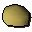

Grand Tree Groceries
Inventory config
gnomeshop_hudoRun by  Hudo. Open in knowledge graph →
Hudo. Open in knowledge graph →
Located in: Grand Tree
Stock
| Item | Stock | Value | Sells for |
|---|---|---|---|
 Gianne dough | 8 | 2 gp | 2 gp |
| 5 | 2 gp | 2 gp | |
| 5 | 10 gp | 10 gp | |
| 5 | 2 gp | 2 gp | |
| 5 | 3 gp | 3 gp | |
| 3 | 1 gp | 1 gp | |
| 3 | 1 gp | 1 gp | |
| 5 | 4 gp | 4 gp | |
| 5 | 4 gp | 4 gp | |
| 5 | 2 gp | 2 gp | |
| 5 | 2 gp | 2 gp | |
| 5 | 2 gp | 2 gp | |
| 5 | 1 gp | 1 gp | |
| 3 | 4 gp | 4 gp | |
| 5 | 2 gp | 2 gp | |
| 8 | 10 gp | 10 gp | |
| 5 | 2 gp | 2 gp | |
| 5 | 2 gp | 2 gp | |
| 5 | 6 gp | 6 gp | |
| 5 | 6 gp | 6 gp | |
| 5 | 2 gp | 2 gp |
Shop sells at 100.0% of item value and buys at 55.0%.